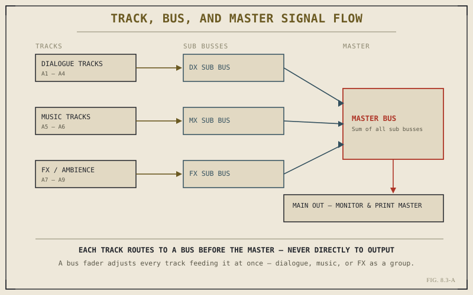

Chapter 8.2 argued, in general terms, that Fairlight's busses and routing are what separate it from a timeline feature. This chapter makes that argument concrete. Opening the Fairlight page for the first time reveals a mixer console running down the right side of the interface — one channel strip per audio track, plus something Chapter 8.1 never needed: a set of bus strips those tracks route through before reaching anything you'll actually hear.
A Channel Strip Per Track
Every audio track on the timeline gets its own strip in the Fairlight mixer, and every strip carries the same core controls: a fader for level, pan for stereo or surround position, mute and solo, and a chain of effect inserts specific to that one track. This is, in essence, the same territory Chapter 8.1's clip gain overlay covered, but promoted to track-wide scope and given the kind of dedicated visual space a single overlay line never had. Where clip gain adjusts one piece of audio in isolation, a track fader adjusts everything on that track uniformly, which is the more natural control once a project has real dialogue, music, and effects tracks running in parallel rather than a single clip needing a quick fix.
Why Tracks Don't Go Straight to Output
Sending every individual track's output directly to the final mix works for a handful of tracks. It stops working cleanly the moment a project has, say, four dialogue tracks, two music tracks, and half a dozen sound effect and ambience tracks — twelve or more separate signals, all needing to be raised or lowered together as their category demands it, with no single control for "all the dialogue" or "all the music" as a group. A bus solves exactly this: a routing destination that several tracks feed into, with its own fader controlling the combined level of everything assigned to it, so raising or lowering an entire category of sound becomes one move instead of a dozen coordinated ones.

Every signal reaches the master bus through a group fader first — nothing skips the queue.
Sub Busses and the Master Bus
Fairlight's routing typically works in two layers, as the diagram above shows. Individual tracks route into a sub bus organized by category — a dialogue bus, a music bus, an effects bus — and those sub busses in turn route into a single master bus, which is what actually reaches the main monitoring output and, eventually, the printed mix. This layering means a mix engineer can make two genuinely different kinds of adjustment without confusing them: a sub bus fader changes the balance of one category relative to everything else, while the master bus fader changes the overall loudness of the finished mix as a whole, without disturbing that internal balance at all.
A bus fader answers "how loud is this category relative to the others?" A master fader answers "how loud is the whole mix?" Keeping those two questions on separate controls is the entire reason busses exist.
Sends: Borrowing a Signal Without Rerouting It
Busses move a track's entire signal to a new destination. A send does something more surgical: it copies a portion of a track's signal to another destination — commonly a reverb or effects bus — while leaving the original signal's routing untouched. This is how a mix engineer places dialogue or music into a shared acoustic space, sending a controlled amount of each into a common reverb bus so they sound like they're occupying the same room, without permanently altering either track's primary path to the master bus. It's a small mechanism, but it's the one that makes a mix sound cohesive rather than like several separately recorded elements simply placed side by side.
The Routing Panel: Where All of This Actually Gets Set
Every one of these connections — track to bus, bus to master, track to send — is configured through Fairlight's routing panel, accessible from each channel strip. It's a more deliberate, more technical process than anything Chapter 8.1 required, closer to patching real hardware than clicking a familiar timeline tool, and that's an accurate reflection of what it's actually doing: building the signal architecture a full mix depends on, one connection at a time, before a single fader move means what you intend it to mean.
With tracks routed into busses and busses into a master, the mixer has structure but no target yet — no defined sense of how loud any of this should actually be for the audience it's meant for. Chapter 8.4 supplies that target, covering levels, loudness measurement, and the broadcast standards a finished mix is ultimately judged against.
Key Concepts to Remember
- Every audio track gets its own channel strip in Fairlight, with a fader controlling that whole track's level, not just one clip's.
- A bus groups several tracks under one fader, so an entire category — dialogue, music, or FX — moves together with one control.
- Sub busses feed a single master bus — category balance and overall mix loudness stay on separate, independent controls.
- A send copies a portion of a signal to another destination, like a shared reverb bus, without rerouting the original track.
Cross-References Forward
| → Ch. 8.4 | Levels, Loudness, and Broadcast Standards — what target this routed, bussed signal actually needs to hit before delivery. |
| → Ch. 8.1 | Revisit clip gain, the single-clip control a track fader generalizes into a full mixer strip. |
| → Ch. 6.4 | Revisit multicam audio strategy now that the full routing model underneath it is concrete. |